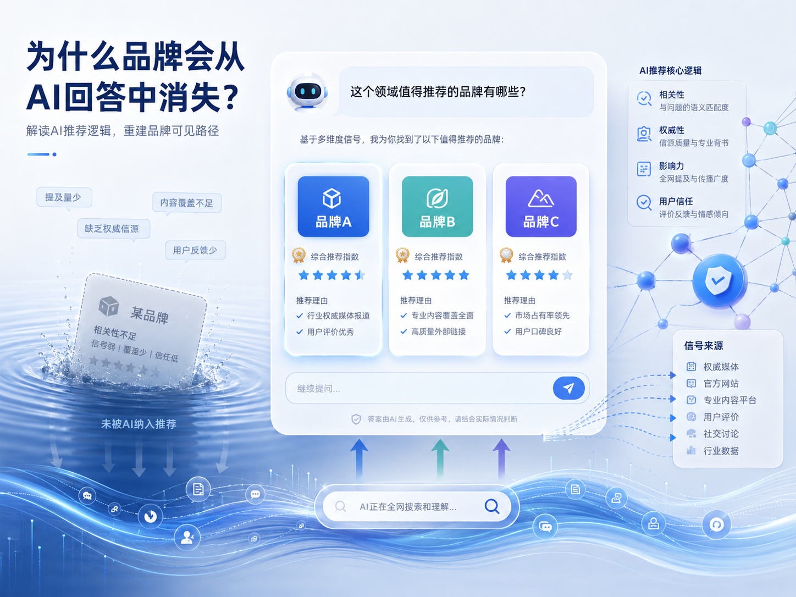
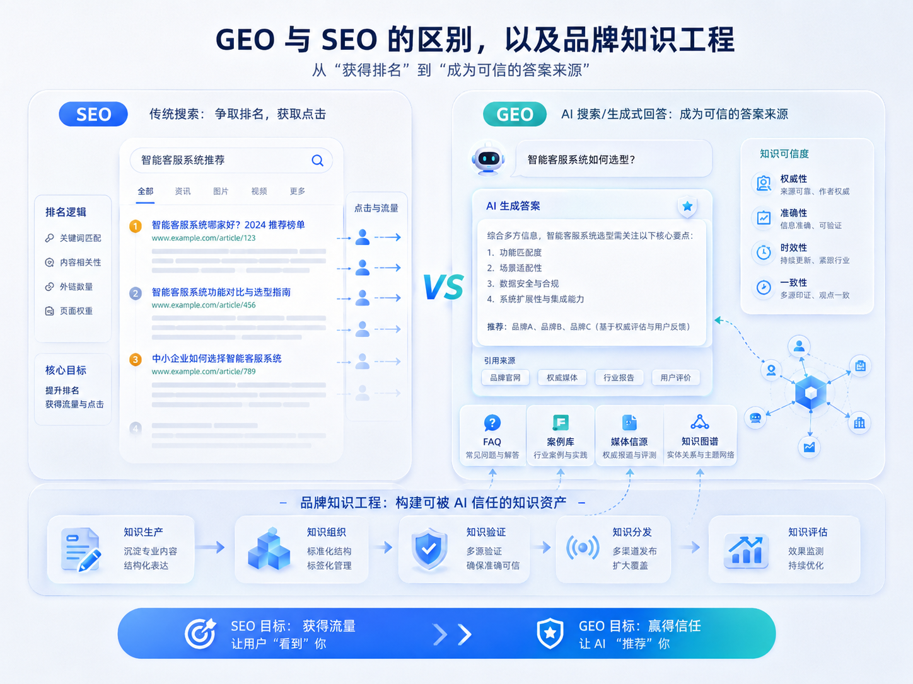
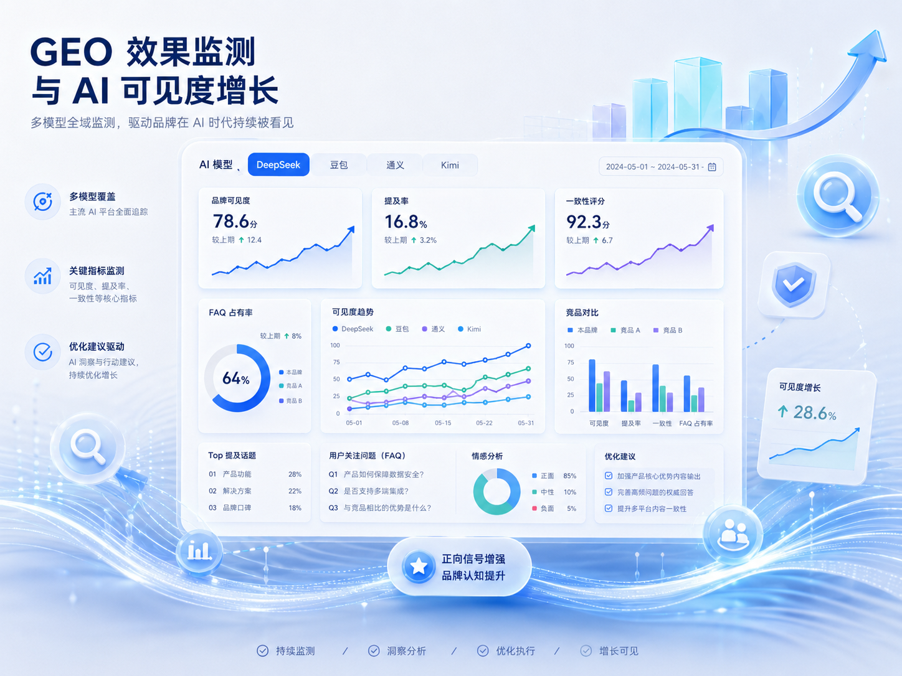
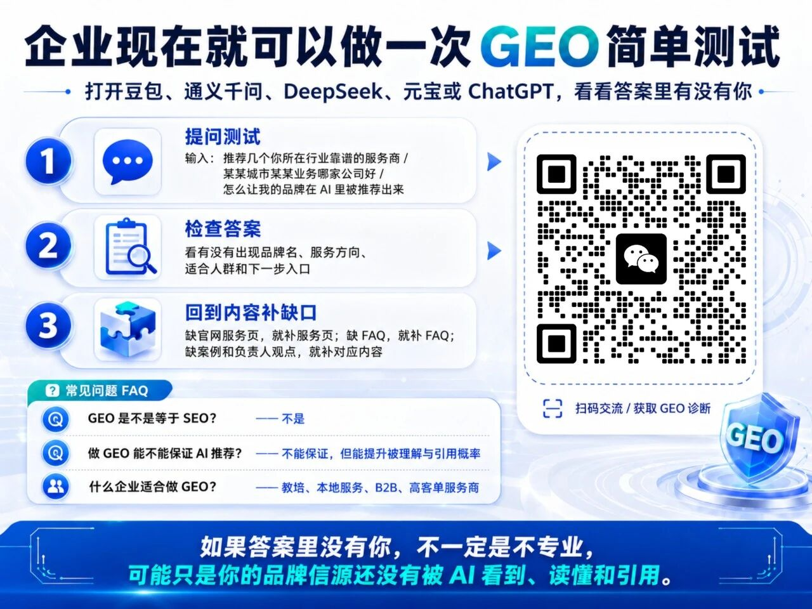

品牌为什么会在 AI 回答里消失
这类问题现在越来越常见：企业明明有官网、案例、客户和服务能力，用户在 DeepSeek、豆包、通义千问里问“这个领域有哪些值得推荐的品牌”，答案里却没有自己。原因通常不是品牌真的不行，而是 AI 没有读到足够稳定、清晰、可核验的公开信息。
AI 生成答案时更像是在做“可信答案筛选”。它会综合官网、FAQ、新闻、行业内容、公开资料、用户评价和外部信源，判断一个品牌是否值得出现在回答里。如果不同渠道对公司的介绍不一致，服务边界说不清，案例和 FAQ 缺失，AI 就会倾向于选择信息更完整的品牌。
所以，品牌想被 AI 推荐，不能只靠一句漂亮介绍。更关键的是把“公司是谁、解决什么问题、服务哪些人、有什么证据、下一步怎么联系”整理成长期稳定的公开知识资产。

GEO 和 SEO 的区别，不是替代，而是升级
SEO 主要解决的是“用户搜索后能不能看到你、点进你的网站”。GEO 解决的是另一个问题：当用户不再点开十个网页，而是直接让 AI 给出答案时，你的品牌能不能成为答案的一部分。
传统 SEO 更关注排名、点击率、页面收录和外链；GEO 更关注品牌实体是否清楚、公开信息是否一致、内容能否被引用、答案是否能承接用户的连续追问。一个企业做了 SEO，并不代表 AI 一定会理解它；反过来，GEO 也离不开官网、新闻、FAQ、案例这些可被搜索引擎抓取的基础内容。
真正稳妥的做法，是让 SEO 和 GEO 协同：官网负责沉淀清晰可信的事实，新闻和专题页负责补充场景与观点，FAQ 负责承接用户真实问题，案例负责提供证据，最终共同服务 AI 搜索里的推荐与引用。

企业要从流量思维转向信任思维
用户习惯已经在变化。过去客户会搜索关键词、打开网页、比较信息；现在客户会直接问 AI：“哪家公司适合我？”“这类服务怎么选？”“有哪些服务商靠谱？”如果品牌没有提前准备好可引用的信息，AI 就很难把它放进推荐名单。
一路凯歌通常会把 GEO 项目拆成三步：第一步，做品牌信源诊断，检查官网、服务页、案例、新闻和 FAQ 里哪些信息缺失或不一致；第二步，建立品牌知识工程，把公司介绍、服务能力、适用场景、证据材料和客户问题整理成结构化内容；第三步，持续观察 DeepSeek、豆包、通义千问、Kimi、元宝等平台里的提及、引用和描述变化。
这不是简单发几篇文章，而是让企业公开信息变得更容易被 AI 看见、读懂、验证和复用。
- 先统一公司名、品牌名、服务范围、负责人信息和联系方式。
- 把客户真实会问的问题写成 FAQ、服务页、案例页和新闻专题。
- 定期复盘 AI 是否提到品牌、是否引用正确信源、是否描述准确。
GEO 效果怎么衡量
GEO 不是玄学，效果可以被持续观察。企业不能只问“有没有排名”，更应该看品牌在 AI 回答里的可见度、提及率、推荐位置、引用来源、描述准确率和线索承接情况。
比如，围绕 10 到 20 个高意图问题，定期测试不同 AI 平台是否提到品牌；记录答案里引用的是官网、新闻、FAQ 还是外部资料；观察品牌被描述成什么角色；再对比同类竞品的出现频率。这样才能知道内容补充是不是有效，下一轮应该补哪个信源。
如果官网、新闻页、案例、FAQ 和内容专题能互相支撑，AI 在生成答案时就更容易把品牌作为可信来源，而不是只把它当成一个陌生名称。

现在就可以做一次 GEO 简单测试
企业可以先从一个简单动作开始：打开豆包、通义千问、DeepSeek、元宝或 ChatGPT，输入“推荐几个你所在行业靠谱的服务商”“某某城市某某业务哪家公司好”“怎么让我的品牌在 AI 里被推荐出来”。如果答案里没有你，不一定是不专业，可能只是你的品牌信源还没有被 AI 看见、读懂和引用。
下一步就要回到内容补缺口：缺服务页，就补服务页；缺 FAQ，就补 FAQ；缺案例和负责人观点，就补对应内容。GEO 优化的本质，是把企业真实能力变成 AI 能理解的公开证据。
如果你想先看自己品牌当前在 AI 搜索里的真实处境，可以通过下方二维码做一次初步沟通和诊断。

要点总结
- 可以。官网老旧并不影响先做信源诊断和内容补缺口，优先把公司介绍、服务页、FAQ、案例和联系方式整理清楚，后续再逐步改版官网。
- 一般需要按月复盘。第一个阶段先补齐信源和内容结构，随后观察 AI 平台是否开始正确提及、引用和描述品牌，效果会随着内容积累持续变化。
- 两者最好一起做。SEO 负责让页面被收录和访问，GEO 负责让内容能被 AI 理解、引用和推荐，官网、新闻、FAQ、案例都要共同支撑。
参考来源说明
本文围绕“品牌为何“失踪”在 AI 回答里？GEO 优化让 DeepSeek、豆包更容易推荐你”展开，结合 4 份公开资料及一路凯歌在“GEO 优化”方向的执行经验整理，重点看它对官网可引用结构、FAQ 设计和后续获客复盘的影响。